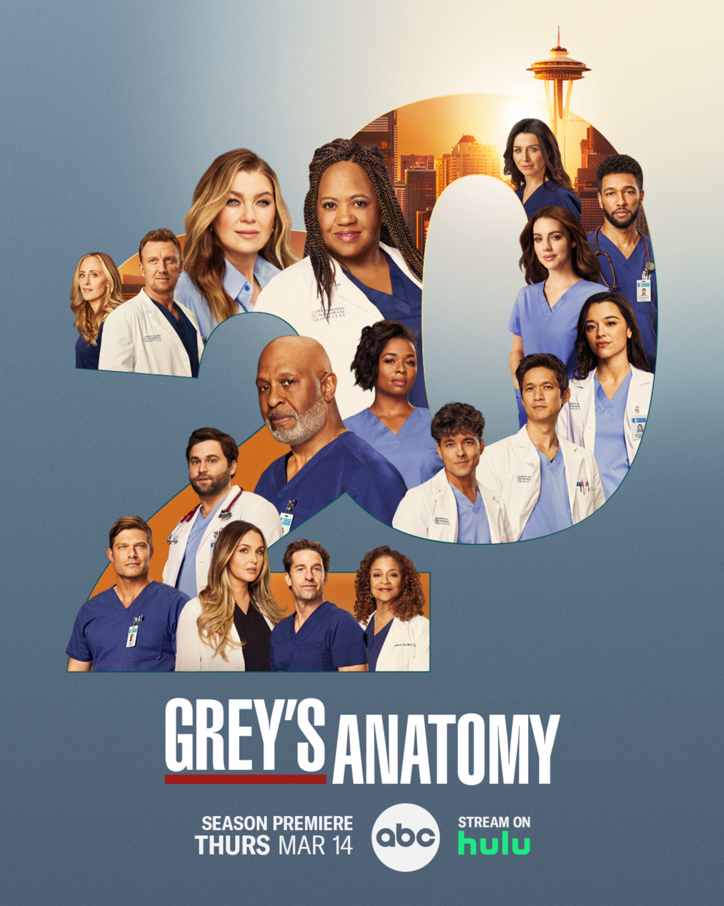
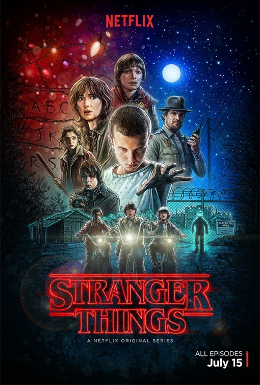
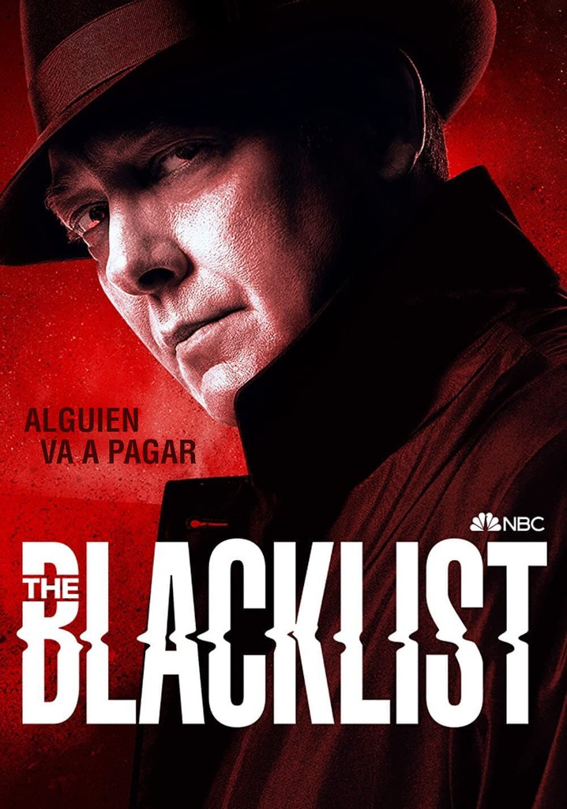

TOP 1. GREY´S ANATOMY
es mi serie fav top 1 porque tiene muchas temporadas con muchos cambios inesperados
9.5/10Aquí encontrarás, mis top series 2026 Yalile

es mi serie fav top 1 porque tiene muchas temporadas con muchos cambios inesperados
9.5/10
top 2 porque tiene mucha producción, pero pocas temporadas
9.5/10
top 3. muchas temporadas, en proceso de verla
9.5/10